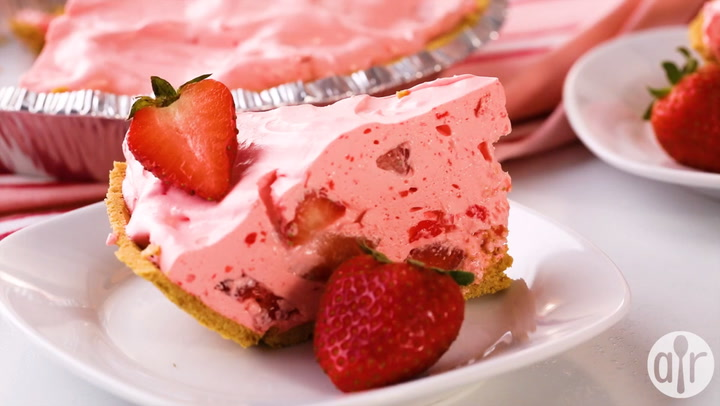

Home Page
Fluffy Strawberry Pie

Description
This fluffy strawberry pie is a no-bake recipe my grandmother would make every year for Thanksgiving.
She would make it with a homemade pie crust, but I also love it with a graham cracker crust.
Either way is great! It's perfect for a very sweet and light dessert.
It just melts in your mouth! Enjoy!
Ingredients
- 1 (3 ounce) package strawberry-flavored Jell-O mix
- 1/4 cup white sugar
- 1/2 cup boiling water
- 1 (8 ounce) container frozen whipped topping, thawed
- 2 1/2 cups sliced fresh strawberries (optional)
- 1 (9-inch) prepared grham cracker crust
- 4 fresh strawberries, halved (optinal)
Steps
- Mix strawberry-flavored gelatin mix, sugar, and boiling water together in a large bowl, stirring until gelatin and sugar have dissolved.
- Refrigerate gelatin mixture until it begins to turn thick and syrupy, about 10 minutes.
- Gently fold frozen whipped topping into gelatin mixture until thoroughly combined.
- Fold the 2 1/2 cups of sliced strawberries into whipped topping mixture.
- Spoon filling into graham cracker crust and decorate edge of filling with 8 strawberry halves.
- Refrigerate at least 2 hours before serving.